secdata#
- CrossSections.secdata(val1='', val2='', val3='', val4='', val5='', val6='', val7='', val8='', val9='', val10='', val11='', val12='', **kwargs)#
Describes the geometry of a section.
Mechanical APDL Command: SECDATA
- Parameters:
- val1
str Values, such as thickness or the length of a side or the numbers of cells along the width, that describe the geometry of a section. The terms
VAL1,VAL2, etc. are specialized for each type of cross-section.- val2
str Values, such as thickness or the length of a side or the numbers of cells along the width, that describe the geometry of a section. The terms
VAL1,VAL2, etc. are specialized for each type of cross-section.- val3
str Values, such as thickness or the length of a side or the numbers of cells along the width, that describe the geometry of a section. The terms
VAL1,VAL2, etc. are specialized for each type of cross-section.- val4
str Values, such as thickness or the length of a side or the numbers of cells along the width, that describe the geometry of a section. The terms
VAL1,VAL2, etc. are specialized for each type of cross-section.- val5
str Values, such as thickness or the length of a side or the numbers of cells along the width, that describe the geometry of a section. The terms
VAL1,VAL2, etc. are specialized for each type of cross-section.- val6
str Values, such as thickness or the length of a side or the numbers of cells along the width, that describe the geometry of a section. The terms
VAL1,VAL2, etc. are specialized for each type of cross-section.- val7
str Values, such as thickness or the length of a side or the numbers of cells along the width, that describe the geometry of a section. The terms
VAL1,VAL2, etc. are specialized for each type of cross-section.- val8
str Values, such as thickness or the length of a side or the numbers of cells along the width, that describe the geometry of a section. The terms
VAL1,VAL2, etc. are specialized for each type of cross-section.- val9
str Values, such as thickness or the length of a side or the numbers of cells along the width, that describe the geometry of a section. The terms
VAL1,VAL2, etc. are specialized for each type of cross-section.- val10
str Values, such as thickness or the length of a side or the numbers of cells along the width, that describe the geometry of a section. The terms
VAL1,VAL2, etc. are specialized for each type of cross-section.- val11
str Values, such as thickness or the length of a side or the numbers of cells along the width, that describe the geometry of a section. The terms
VAL1,VAL2, etc. are specialized for each type of cross-section.- val12
str Values, such as thickness or the length of a side or the numbers of cells along the width, that describe the geometry of a section. The terms
VAL1,VAL2, etc. are specialized for each type of cross-section.
- val1
Notes
The secdata command defines the data describing the geometry of a section. The command is divided into these section types: Beams Beams, Contact, General Axisymmetric, Joints, Links, Pipes Pipes, Pretension, Reinforcing, Shells, Supports, and Taper.
The data input on the secdata command is interpreted based on the most recently issued sectype command. The data required is determined by the section type and subtype, and is different for each one.
Type: BEAM#
Beam sections are referenced by
BEAM188andBEAM189elements. Not all secoffset location values are valid for each subtype.This command contains some tables and extra information which can be inspected in the original documentation pointed above.
Type: CONTACT#
Geometry Correction Contact sections for geometry correction (
Subtype= CIRCLE, SPHERE, or CYLINDER) are referenced by the following elements:TARGE169,TARGE170,CONTA172, andCONTA174. This geometry correction applies to cases where the original meshes of contact elements or target elements are located on a portion of a circular, spherical, or revolute surface.Type: CONTACT, Subtype: CIRCLE
Data to provide in the value fields for
Subtype= CIRCLE:X0,Y0(circle center location in Global Cartesian coordinates - XY plane)
Type: CONTACT, Subtype: SPHERE
Data to provide in the value fields for
Subtype= SPHERE:X0,Y0,Z0(sphere center location in Global Cartesian coordinates)
Type: CONTACT, Subtype: CYLINDER
Data to provide in the value fields for
Subtype= CYLINDER:X1,Y1,Z1,X2,Y2,Z2(two ends of cylindrical axis in Global Cartesian coordinates)
User-Defined Contact Surface Normal The contact section for a user-defined contact surface normal (
Subtype= NORMAL) is referenced by the following elements:CONTA172,CONTA174, andCONTA175. This geometry correction is used to define a shift direction for interference fit solutions.Type: CONTACT, Subtype: NORMAL
Data to provide in the value fields for
Subtype= NORMAL:CSYS,NX,NY,NZwhere:
CSYS= Local coordinate system number (defaults to global Cartesian).NX,NY,NZ= Direction cosines with respect toCSYS.
Radius values associated with contact or target elements The radius contact section (
Subtype= RADIUS) is referenced by contact or target elements in a general contact definition under the following circumstances:Equivalent 3D contact radius for beam-to-beam contact - The contact section for a user-defined equivalent contact radius (
Subtype= RADIUS) is referenced by the element typeCONTA177within a general contact definition. 3D beam-to-beam contact (or edge-to-edge contact) modeled by this line contact element assumes that its surface is a cylindrical surface.Radius (or radii) of rigid target segments - The contact section for rigid target segment radii is referenced by target elements
TARGE169(circle segment type) andTARGE170(line, parabola, cylinder, sphere, or cone segment type) in a general contact definition.
Type: CONTACT, Subtype: RADIUS
Data to provide in the value fields for
Subtype= RADIUS if the section is used as an equivalent contact radius for 3D beam-to-beam contact:VAL1= Equivalent radius - outer radiusVAL2= Equivalent radius - inner radius (internal beam-to-beam contact)VAL3: Set to 1 for internal beam-to-beam contact. Defaults to external beam-to-beam contact.Data to provide in the value fields for
Subtype= RADIUS if the section is used for 2D or 3D rigid target segments:VAL1= First radius of the target segment (used for circle, line, parabola, cylinder, sphere, and cone segment types)VAL2= Second radius of the target segment (used only for the cone segment type)
Simplified Bolt Thread Modeling The contact section for bolt-thread modeling (
Subtype= BOLT) is referenced by the following elements:CONTA172,CONTA174, andCONTA175. It applies to cases where the original meshes of contact elements are located on a portion of a bolt-thread surface. This feature allows you to include the behavior of bolt threads without having to add the geometric detail of the threads. Calculations are performed internally to approximate the behavior of the bolt-thread connections.Type: CONTACT, Subtype: BOLT
Data to provide in the value fields for
Subtype= BOLT:Dm,P,ALPHA,N,X1,Y1,Z1,X2,Y2,Z2where:
Dm = Pitch diameter, d m.P= Pitch distance, p.ALPHA= Half-thread angle, α (defaults to 30 degrees).N= Number of starts (defaults to 1).X1,Y1,Z1,X2,Y2,Z2= Two end points of the bolt axis in global Cartesian coordinates.
Type: AXIS#
General axisymmetric sections are referenced by the
SURF159,SOLID272, andSOLID273elements. Use this command to locate the axisymmetric axis.Data to provide in the value fields:
Pattern 1 (two points):
1,
X1,Y1,Z1,X2,Y2,Z2where
X1,Y1,Z1,X2,Y2,Z2are global Cartesian coordinates.Pattern 2 (coordinate system number plus axis [1 = x, 2 = y, 3 = z] ):
2,
csys,axiswhere
csysis a Cartesian coordinate system.Pattern 3 (origin plus direction):
3,
XO,YO,ZO,xdir,ydir,zdirwhere
XO,YO,ZOare global Cartesian coordinates and xdir,ydir, andzdirare direction cosines.
Type: JOINT#
Joint sections are referenced by
MPC184joint elements.Data to provide in the value fields:
length1,length2,length3,angle1,angle2,angle3where:
length1-3= Reference lengths used in the constitutive calculations.angle1-3= Reference angles used in the constitutive calculations.
The following table shows the lengths and angles to be specified for different kinds of joints.
This command contains some tables and extra information which can be inspected in the original documentation pointed above.
The reference length and angle specifications correspond to the free relative degrees of freedom in a joint element for which constitutive calculations are performed. These values are used when stiffness and/or damping are specified for the joint elements.
If the reference lengths and angles are not specified, they are calculated from the default or starting configuration for the element.
See
MPC184or the individual joint element descriptions for more information on joint element constitutive calculations.Type: LINK#
Link sections are referenced by the
LINK33,LINK180andCABLE280elements.Data to provide in the value fields:
VAL1= Area
Type: PIPE#
Pipe sections are referenced by the
PIPE288,PIPE289, andELBOW290elements.Data to provide in the value fields:
Do,Tw,Nc,Ss,Nt,Mint,Mins,Tinswhere:
Do = Outside diameter of pipe. Use a constant value for a circular pipe and an array for a noncircular pipe. (Noncircular pipe sections are referenced by theELBOW290element only. See Defining a Noncircular PipeTw = Wall thickness. Default =Do / 2, or “solid” pipe. (“Solid” pipe is not applicable toELBOW290; for that element, a thickness less thanDo / 4 is recommended.)Nc = Number of cells around the circumference (8 \(equation not available\)Nc \(equation not available\) 120, where a greater value improves accuracy slightly; default = 8).Ss = Section number of the shell representing the pipe wall. Valid withELBOW290only. (Total thickness of the section is scaled toTw. The program considers the innermost layer inside of the pipe to be the first layer.)Nt = Number of cells through the pipe wall. Valid values are 1 (default), 3, 5, 7, and 9. Cells are graded such that they are thinner on the inner and outer surfaces. Valid withPIPE288andPIPE289only.Mint = Material number of fluid inside of the pipe. The default value is 0 (no fluid). This value is used to input the density of the internal fluid. The fluid inside the pipe element is ignored unless the free surface in a global X-Y plane is added as face 3 ( sfe ) and is high enough to include at least one end node of the element.Mins = Material number of material external to the pipe (such as insulation or armoring). The default value is 0 (no external material). This value is used to input the density of the external material. (External material adds mass and increases hydraulic diameter, but does not add to stiffness.)Tins = Thickness of material external to the pipe, such as insulation. The default value is 0 (no external material).
The accuracy of the ovalization value (OVAL) output by
ELBOW290( Structural Elbow form only) improves as the specified number of cells around the circumference (Nc ) is increased.External material (
Mins ) adds mass and increases hydraulic diameter, but does not add to stiffness.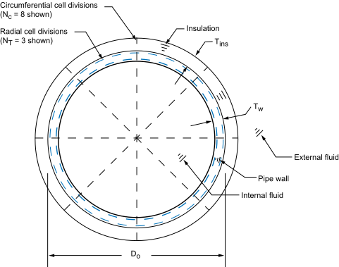
Type: PRETENSION#
Pretension sections are referenced by the
PRETS179element.Data to provide in the value fields:
node,nx,ny,nzwhere:
node= Pretension node number.nx= Orientation in global Cartesian x direction.ny= Orientation in global Cartesian y direction.nz= Orientation in global Cartesian z direction.
The following usage is typical:
SECTYPE, 1, PRETENSION
SECDATA, 13184, 0.000, 0.000, 1.000
SECMODIF, 1, NAME, example
SLOAD, 1, PL01, TINY, FORC, 100.00, 1, 2
The
PRETENSIONsection options of sectype and secdata are documented mainly to aid in the understanding of data written by cdwrite. Ansys, Inc. recommends that you generate pretension sections using psmesh.Type: REINF#
Each secdata command defines the material, geometry, and orientation (if Subtype = SMEAR) of one reinforcing member (discrete fiber or smeared surface) in the section. The reinforcing section can be referenced by reinforcing elements (
REINF263,REINF264, andREINF265), orMESH200elements when used for temporarily representing reinforcing members. Only one secdata command is allowed per section when referenced byMESH200elements. For more information, see Element EmbeddingType: REINF, Subtype: DISCRETE
Defines discrete reinforcing fibers with arbitrary orientations. For the MESH input pattern, reinforcing section data is referenced by
MESH200elements. For other patterns, issue separate secdata commands to define each reinforcing fiber.Data to provide in the value fields:
MAT, A, PATT, V1, V2, V3, V4, V5MAT= Material ID for the fiber. (SeeREINF264for valid material models.) When the reinforcing section is referenced by aMESH200element, the default is theMESH200element material ID ( mat ). When the section is referenced by reinforcing elements, the material ID is required for all fibers, and no default for this value is available.A= Cross-section area of the reinforcing fiber.PATT= Input pattern code (described below) indicating how the location of this fiber is defined. Available input patterns are MESH (when the section is referenced by aMESH200element), and LAYN, EDGO, and BEAM (when the section is referenced by a reinforcing element).V1, V2, V3, V4, V5= Values to define the location of the reinforcing fiber (depending on thePATTpattern code used), as shown:
PATT: MESH
Description: The locations of reinforcing fibers are defined directly via
MESH200element connectivity.PATT: LAYN
Description: The discrete reinforcing fiber is placed in the middle of a layer in a layered base element. The orientation of the fiber within the layer is adjustable via offsets with respect to a specified element edge.
Required input:
V1(orN) – The number of the layer in the base element on which to apply the reinforcing fiber. The default value is 1.V2(ore) – The number to indicate the element edge to which the offsets are measured. The default value is 1.V3andV4(orY1andY2) – The normalized distances from the fiber to the two ends of the specified element edge. Valid values forY1andY2are 0.0 through 1.0. The default value ofY1is 0.5. The default value ofY2isY1.
When applied to 8-node or 20-node layered solid elements:
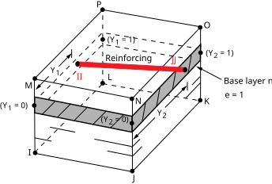
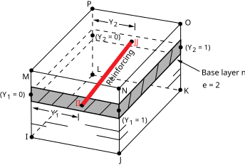
When applied to 4-node or 8-node layered shell elements:
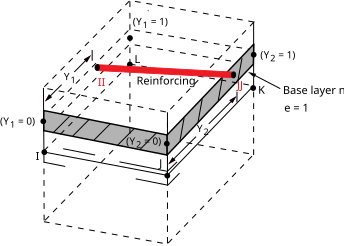
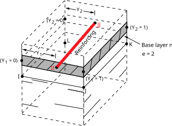
PATT: EDGO
Description: The orientation of the discrete reinforcing fiber is similar to one of the specified element edges. The fiber orientation can be further adjusted via offsets with respect to the specified element edge.
Required input:
V1(orO) – The number to indicate the element edge to which the offsets are measured. The default value is 1.V2andV3(orY1andZ1) – The normalized distances from the fiber to the first end of the specified element edge. Valid values forY1andZ1are 0.0 through 1.0. The default value forY1andZ1is 0.5.V4andV5(orY2andZ2) - The normalized distances from the fiber to the second end of the specified element edge. Value values forY2andZ2are 0.0 through 1.0. The default value forY2isY1, and the default value forZ2isZ1.
If the base element is a beam or link, the program ignores values
V2throughV5and instead places the reinforcing in the center of the beam or link.When applied to 8-node or 20-node solid elements:
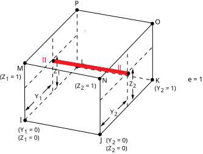
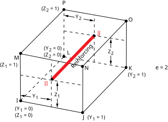
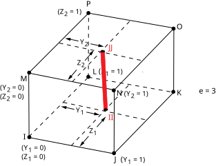
When applied to tetrahedral elements:
This command contains some tables and extra information which can be inspected in the original
documentation pointed above.
When applied to 3D shell elements:
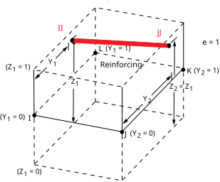
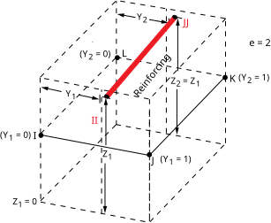
When applied to beam or link elements:
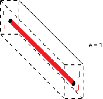
PATT: BEAM
Description: Use this specialized input pattern for defining reinforcing in regular constant and tapered beams.
Required input:
V1andV2(orY1andZ1) – Y and Z offsets with respect to the section origin in the first beam section referenced by the base beam element. The default value for Y1 and Z1 is 0.0.V3andV4(orY2andZ2) – Y and Z offsets with respect to the section origin in the second beam section referenced by the base beam element. The default value forY2isY1, and the default value forZ2isZ1. (BecauseV3andV4values apply only to tapered beams, the program ignores them if the base beam has a constant section.)
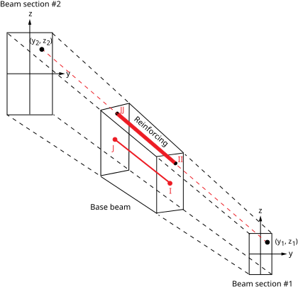
Type: REINF, Subtype: SMEAR
Suitable for layers of reinforcing fibers with uniform cross-section area and spacing. Each secdata command defines the one reinforcing layer in the section. When referenced by a
MESH200element, only one secdata command per section is allowed. When referenced by reinforcing elements (REINF263andREINF265), this limitation does not apply.Data to provide in the value fields:
MAT, A, S, KCN, THETA, PATT, V1, V2, V3, V4, V5where:
MAT= Material ID for layer. (SeeREINF263orREINF265for available material models.) When the section is referenced by aMESH200element, the default is theMESH200element material ID ( mat ). When the section is referenced by reinforcing elements, the material ID is required for all fibers, and no default for this value is available.A= Cross-section area of a single reinforcing fiber ( or the thickness of the reinforcing layer for homogeneous reinforcing membranes).S= Distance between two adjacent reinforcing fibers (ignored for homogeneous reinforcing membranes).Note: If the section is used to model the reinforcing layers with a uniaxial stress state ( seccontrol,,,0), the equivalent thickness h of the reinforcing layer is determined by h =
A/S, whereAis the cross-section area of a single fiber andSis the distance between two adjacent fibers. If the section is used to model homogeneous reinforcing membranes ( seccontrol,,,1), the cross-section area inputAis the thickness of the reinforcing layer and the distance inputSis ignored.KCN= Local coordinate system reference number for this layer. (See local for more information.) When the section is referenced by aMESH200element, the defaultKCNvalue is theMESH200element coordinate system ID ( esys ). For the 2D smeared reinforcing elementREINF263,KCNinput is not required. WhenKCNis not specified, the program uses a default layer coordinate system (described inREINF263andREINF265).THETA= Angle (in degrees) of the final layer coordinate system with respect to the default layer system or the layer system specified in theKCNfield. This value is ignored forREINF263when that element is embedded in 2D plane strain or plane stress base elements.PATT= Input pattern code (described below) indicating how the location of this fiber is defined. Available input patterns are MESH (when the section is referenced by aMESH200element), and LAYN, EDGO, and BEAM (when the section is referenced by a reinforcing element).V1, V2, V3, V4, V5= Values to define the location of the reinforcing layer, as shown:
PATT: MESH
Description: The locations of reinforcing fibers are defined directly via
MESH200element connectivity.PATT: LAYN
Description: The smeared reinforcing layer is placed in the middle of a layer in a layered base element.
**Required input:**
V1(orn) – The number of the layer in the base element on which to apply the reinforcing layer. The default value is 1.This command contains some tables and extra information which can be inspected in the original documentation pointed above.
PATT: EDGO
Description: This pattern applies only to 2D smeared reinforcing element
REINF263. The smeared reinforcing layer is represented by a line in 2D. The orientation of the 2D smeared reinforcing layer is similar to one of the specified element edges. The fiber orientation can be further adjusted via offsets with respect to the specified element edge.Required input:
V1(orO) – The number to indicate the element edge to which the offsets are measured. The default value is 1.V2(orY1) – The normalized distances from the reinforcing layer to the first end of the specified element edge. Valid values for Y1 are 0.0 through 1.0. The default value forY1is 0.5.V3(orZ1) input is ignored.V4(orY2) – The normalized distances from the reinforcing layer to the second end of the specified element edge. Valid value values forY2are 0.0 through 1.0. The default value forY2isY1.V4(orY2) is ignored for axisymmetric shell elements.V5(orZ2`) input is ignored.
This command contains some tables and extra information which can be inspected in the original documentation pointed above.
PATT: ELEF
Description: The smeared reinforcing layer is oriented parallel to one of three adjacent element faces. (This pattern does not apply to 2D smeared reinforcing element
REINF263.)Required input:
V1(orF) – The number to indicate the base element face. The default value is 1.V2(ord1) – The normalized distance from the layer to the specified base element face. Valid values ford1are 0.0 through 1.0. The default value is 0.5.V3(ord2) – The normalized distance from corners JJ and KK of the layer to the specified base element face (applicable to 8-node or 20-node solid elements only). Valid values ford2are 0.0 through 1.0. The default value isd1.
When applied to 8-node or 20-node solid elements:
This command contains some tables and extra information which can be inspected in the original
documentation pointed above.
When applied to tetrahedral elements:
This command contains some tables and extra information which can be inspected in the original documentation pointed above.
When applied to 3D shell elements:
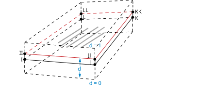
Type: SHELL#
Shell sections are referenced by the
SHELL131,SHELL132,SHELL181,SOLID185Layered Solid,SOLID186Layered Solid,SOLSH190,SHELL208,SHELL209,SOLID278Layered Solid,SOLID279Layered Solid, andSHELL281elements.Data to provide in the value fields:
TK,MAT,THETA,NUMPT,LayerNamewhere:
TK= Thickness of shell layer. Zero thickness (not valid forSHELL131andSHELL132) indicates a dropped layer. The sum of all layer thicknesses must be greater than zero. The total thickness can be tapered via the secfunction command.MAT= Material ID for layer (any current-technology material model is available forSHELL181,SOLID185Layered Solid,SOLID186Layered Solid,SOLSH190,SHELL208,SHELL209,SOLID278Layered Solid andSOLID279Layered Solid [including UserMat ], andSHELL281).MATis required for a composite (multi-layered) laminate. For a homogeneous (single-layered) shell, the default is the element material attribute. You can also address multiple reference temperatures ( tref and/or mp,REFT).THETA= Angle (in degrees) of layer element coordinate system with respect to element coordinate system (ESYS).NUMPT= Number of integration points in layer. The user interface offers 1, 3 (default), 5, 7, or 9 points; however, you can specify a higher number on the secdata command. The integration rule used is Simpson’s Rule. (NUMPTis not used bySHELL131andSHELL132.)
Type: SUPPORT#
Support sections are referenced by
SOLID185andSOLID186elements.Type: SUPPORT, Subtype: BLOCK
Data to provide in the value fields for
Subtype= BLOCK:T,Lwhere:
T= Thickness of the block wall.L= Spacing distance of the block walls.
Type: SUPPORT, Subtype: ASEC
Data to provide in the value fields for
Subtype= ASEC:
This command contains some tables and extra information which can be inspected in the original documentation pointed above.
The multiplication factors are homogenization factors, and in each direction reflect the ratio of the support area projected onto the area of a fully solid support.
Values default to 1.0.
Y and Z values default to X values.
GXY value defaults to EX value, GYZ to EY, and GXZ to EZ.
Type: TAPER#
Tapered sections are referenced by
BEAM188,BEAM189andELBOW290elements. After specifying the tapered section type ( sectype,,TAPER), issue separate secdata commands to define each end of the tapered beam or pipe.Data to provide in the value fields:
Sec_IDn,XLOC,YLOC,ZLOCwhere:
Sec_IDn= Previously defined beam or pipe section at ends 1 and 2.XLOC,YLOC,ZLOC= The location of Sec_ID n in the global Cartesian coordinate system.
For more information about tapered beams and pipes, including assumptions and example command input, see Defining a Tapered Beam or Pipe